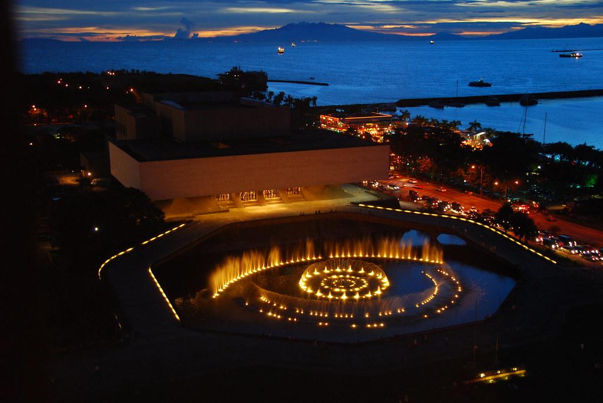

The Cultural Center of the Philippines Sentrong Pangkultura ng Pilipinas, or CCP is a corporation run by the government with the mission of preserving, developing, and promoting Philippine arts and culture. Music, dance, theater, visual, literary, cinematic, and broadcast arts programs are all planned and carried out by the Cultural Center of the Philippines (CCP), the country's leading institution. Since its establishment in 1969 by President Ferdinand E.
The Cultural Center of the Philippines (CCP) is a government-owned arts and cultural complex located in Pasay City, Metro Manila. Here are some of the things that make CCP special:
Arts and Culture: CCP is the premier arts and culture center in the Philippines, showcasing the country's diverse cultural heritage through various performances, exhibitions, and events. It hosts a wide range of performances, including theater, dance, music, and film.
Architectural Beauty: CCP's architecture is a work of art in itself. The center was designed by National Artist for Architecture Leandro Locsin and features an iconic Philippine flag-shaped structure that houses various performance venues, including a theater, concert hall, and exhibition halls.
World-Class Facilities: CCP boasts world-class facilities that cater to the needs of artists and audiences alike. The center has several performance venues, rehearsal spaces, and production facilities that are equipped with state-of-the-art technology and equipment.
Educational Programs: CCP offers educational programs that aim to promote and develop the arts in the Philippines. The center provides scholarships and training programs for artists and cultural workers, and it also runs programs that promote cultural awareness and appreciation among the public.
Location: CCP is located in a prime location in Pasay City, making it easily accessible from other parts of Metro Manila. The center is near major transportation hubs and is just a short distance from other cultural attractions, such as Rizal Park and Manila Bay.
Overall, CCP is a special place that celebrates the richness and diversity of Philippine arts and culture. Its world-class facilities, educational programs, and iconic architecture make it a must-visit destination for anyone interested in the arts and culture scene in the Philippines.